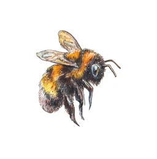

안녕하세요.
벌이 성실히 꿀을 모으듯 저또한 성실히 공부하는 우등생입니다.
저는 웹 개발과 디자인에 관심이 많아서 학교에서 뿐만 아니라 집에서도 꾸준히 연습과 학습을 하고 있습니다. 배운 내용을 실제 결과물로 만들어 보고, 그 과정을 포트폴리오로 기록하는 것이 재밌기도 하고 중요하다고도 생각합니다.
이름양승윤
학년고등학교 2학년
관심분야웹 개발, 클라우드, 디자인
목표자격증 부자 또는 그냥 부자